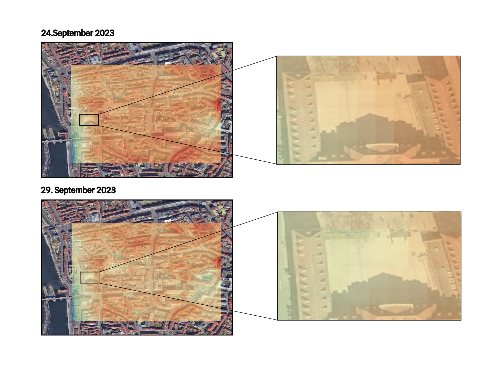

Klimarondell
Klimarondell: Ein Innovatives Projekt in Würzburg
Das “Klimarondell” wurde als temporäre Lösung für die heißen Sommermonate in Würzburg eingeführt und stand zwischen Juli und September im Stadtzentrum. In dieser Zeit hatte die Bevölkerung die Gelegenheit, die innovative Anlage auszuprobieren und zu bewerten. Das multifunktionale Gerät konnte nicht nur Schatten spenden, sondern auch die Luft befeuchten und reinigen, die Umgebungstemperatur senken und Strom erzeugen. Bei positiver Resonanz seitens der Bevölkerung und Fachleute erwägt die Stadt, weitere Einheiten dieses Modells an unterschiedlichen Orten im Stadtgebiet zu platzieren.

Überblick über das Klimarondell-Projekt
Das “Klimarondell” ist ein Pilotprojekt der Smarten Region Würzburg (SRW) und wurde in Zusammenarbeit mit dem baden-württembergischen Start-Up “greenovacity” entwickelt. Mit seinem schattenspendenden Runddach, den pflanzenberankten Wänden, Sitzgelegenheiten und der Kühltechnik bot es eine erfrischende Ruhezone während der heißen Sommertage. Der Prototyp wurde bis Ende September auf seine Kühlleistung hin überprüft, um festzustellen, wie effektiv er zur Verbesserung des Mikroklimas auf versiegelten Flächen beitragen kann..
Die Geschichte der Daten
Temperaturdaten der Stadt
In diesem Abschnitt analysieren wir die Temperaturdaten der Stadt Würzburg, die während der Aufstellung des Klimarondells vor dem Rathaus gesammelt wurden. Die Daten wurden vom Deutschen Wetterdienst (DWD) bereitgestellt.
Die folgende Grafik zeigt den Temperaturverlauf im Zeitraum von Juli bis September und gibt Aufschluss über die klimatischen Bedingungen in dieser Zeit.
Die Temperatur in Würzburg zeigt im betrachteten Zeitraum Schwankungen, was auf verschiedene Wetterbedingungen zurückzuführen ist. Diese Daten dienen als Grundlage für unsere weitere Analyse.
Interactive Visualization of Klimarondell Data
Die IoT-Daten zeigen, dass das Klimarondell eine kühlende Wirkung auf seine unmittelbare Umgebung hat und somit zur Verbesserung des Mikroklimas beiträgt.
Satellitendaten
Abschließend werfen wir einen Blick auf die Satellitendaten, um ein umfassendes Bild der Situation zu erhalten.

UrbanSens hat im Rahmen einer innovativen Analyse Satellitendaten der Copernicus-Serie der Europäischen Weltraumorganisation (ESA) genutzt, um die Landoberflächentemperatur in einem spezifischen Gebiet zu untersuchen. Diese Technologie, auch als Earth Observation (EO) bekannt, ermöglicht es uns, aus dem Weltraum präzise Messungen und Beobachtungen der Erdoberfläche durchzuführen.
Die Copernicus-Satelliten tragen eine Vielzahl von Instrumenten, die in der Lage sind, verschiedene Arten von Daten zu sammeln, einschließlich der Temperatur der Landoberfläche. Diese Daten sind entscheidend, um Veränderungen in unserer Umwelt zu überwachen und zu verstehen.
Für unsere Analyse haben wir uns auf wöchentliche Daten konzentriert und die Veränderungen der Pixel in dem Gebiet ausgewertet, in dem das Klimarondell aufgestellt war. Die Pixel in den Satellitenbildern repräsentieren spezifische Bereiche auf der Erdoberfläche, und jede Änderung in ihrer Helligkeit oder Farbe kann auf eine Veränderung in den Umweltbedingungen hindeuten.

Durch den Vergleich der Satellitendaten vor und nach der Installation des Klimarondells konnten wir feststellen, ob es eine spürbare Veränderung in der Landoberflächentemperatur gegeben hat. Dies ermöglichte es uns, die Effektivität des Klimarondells bei der Beeinflussung der lokalen Temperaturbedingungen zu bewerten.
Fazit und Ausblick
Auf Basis der analysierten Daten können wir festhalten, dass das Klimarondell einen positiven Einfluss auf das Mikroklima im Bereich seines Standortes hat. Es trägt dazu bei, die Temperatur zu senken, die Luft zu reinigen und bietet gleichzeitig einen angenehmen Aufenthaltsort im Freien. Dieses Projekt zeigt, wie innovative Lösungen zur Anpassung an den Klimawandel beitragen und die Lebensqualität in städtischen Gebieten verbessern können.
‚